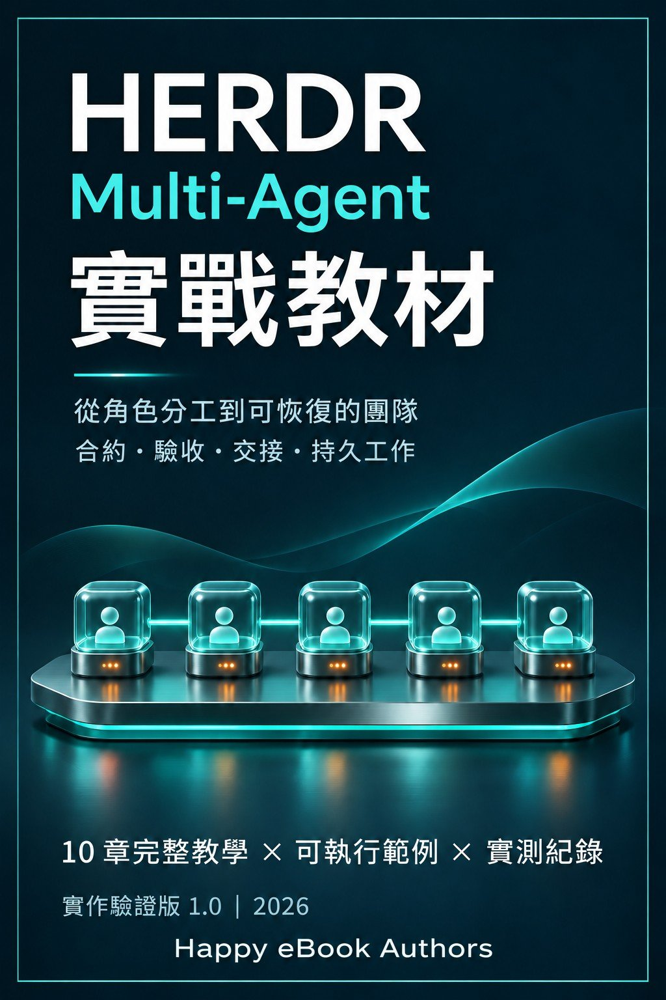

HERDR Multi-Agent 實戰教材
從角色分工到可恢復的團隊

HERDR Multi-Agent 實戰教材
從角色分工到可恢復的團隊
開五個 AI 視窗，不等於帶領一支 Agent 團隊。 真正的多 Agent 協作，需要清楚的角色、共用的合約、可追蹤的交接，以及能夠判斷「成果是否真的完成」的驗收方法。 《HERDR Multi-Agent 實戰教材》以 Herdr TUI、Python 與可執行範例，帶你從雙 Agent 分工起步，逐步建立網站開發、技術研究、自動化交付與可恢復工作佇列。重點不只是讓 AI 同時工作，而是讓不同角色的成果能夠整合、檢查，並在失敗後繼續推進。 【你會學到什麼】 • 管理 Workspace、Tab 與 Pane，辨識終端位置和 Agent 程序的差別。 • 為 Manager、Developer、QA 與 Reviewer 設計明確的任務和檔案邊界。 • 使用任務識別碼與完成收據，避免把「模型閒置」誤當成「任務通過」。 • 建立交叉 Code Review、共享記憶與檔案雜湊驗證的工作流程。 • 整合 FastAPI、SQLite 與原生 JavaScript，完成可操作的任務管理網站。 • 將研究主張對應到來源與引文，產生可追溯的技術報告。 • 以結束碼、逾時與成果檢查管理交付管線，並透過租約、重試與去重恢復中斷工作。 【十章實作路線】 • 建立 Herdr 多 Agent 開發環境 • 三個 Agent 分工協作 • Workspace、Tab、Pane 多工作區管理 • 主 Agent 自動派工與多代理協調 • Multi-Agent 交叉 Code Review • Agent 工作交接與共享記憶 • 五 Agent 完整網站開發 • 五 Agent 技術研究團隊 • AI 自動化開發工廠 • 持續運作的 AI Agent 團隊 【不只談概念，也提供驗證依據】 完整參考程式、角色提示詞與測試收錄於書中附錄。本版包含 42 個已執行的 Python、API 與併發測試，並完成真實 Herdr 雙 Pi Agent 通訊、任務收據及網站瀏覽器操作驗證。 配套程式、提示詞與測試另提供 GitHub 讀者資源包，可依書中的正式下載連結與版本說明取得。 【適合誰閱讀】 適合具備基本終端操作、Python 與 Git 概念，希望把 AI Coding 從個人使用提升為有流程協作的開發者、技術教師、自學者與小型團隊。 本書以 Herdr TUI 為範圍，示範環境為 WSL2／Ubuntu 與 Python 3.12。不同角色可以使用同一款已設定好的 Agent CLI；實際模型派工仍須具備對應工具與登入設定。 從「請 AI 幫忙」，走向「讓 AI 團隊交付可檢查的成果」。